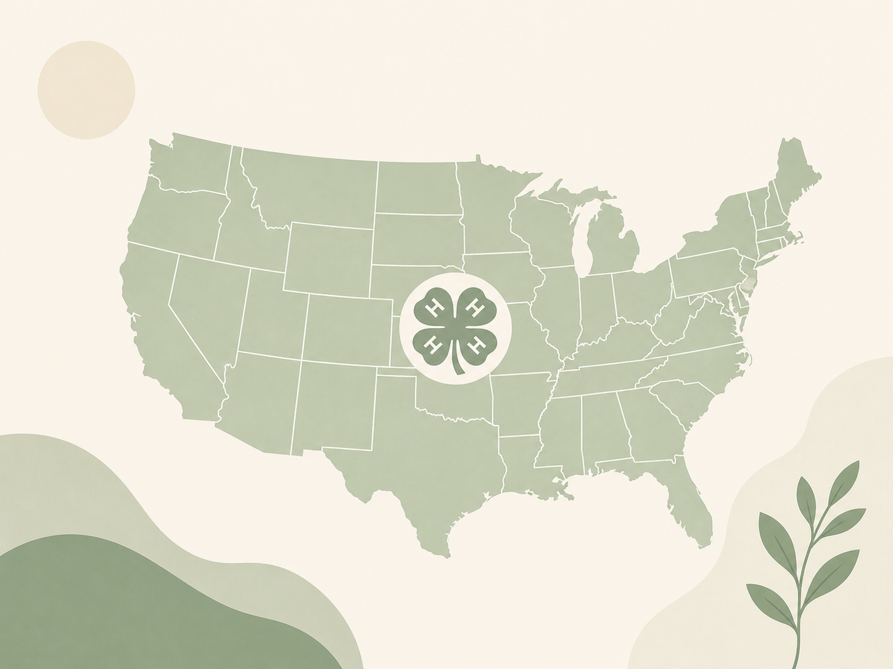

This project uses GIS to collect, organize, and visualize the people, places, projects, and memories that have helped shape 4-H communities. Explore the map and help add another story to the record.

Anyone connected to 4-H can help document a meaningful part of its history.
Look for a memorable person, place, club, event, project, photograph, or milestone from your local 4-H community.
Gather the who, what, when, where, why, evidence, impact, and permission to share the materials.
Submit the information and encourage another 4-H member or county to contribute.
If it shaped 4-H in your community, it belongs in the record.
Mapping history makes local stories easier to discover and gives future generations a way to learn from the people and communities that came before them.
Choose an action that fits you and help preserve New England's 4-H History.
Have a verified historical story or local 4-H memory? Add it to the project.
Open the map →Help identify stories and encourage other members, families, and leaders to participate.
Get involved →Talk with a 4-H member, volunteer, leader, alumni, or community member and preserve their memories.
Submit a story →Good historical entries are specific, supported by evidence, and respectful of the people whose stories are being shared.
Have a question, story, or idea? Use either contact card below.
Email: your-email@example.com
Organization: GIS National 4H Leadership Team
Email: hiteshvuppala@national4hgeospatialteam.us
Organization: GIS National 4H Leadership Team